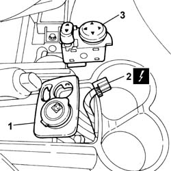

7005R40 rear view mirror-s and door mirror-s positioning switch unit - r r
- Path
- Procedures > 70 FITTINGS > 7005 PASSENGER COMPARTMENT FRONT SIDE DOORS > 7005R front door mirrors > 7005R40 rear view mirror-s and door mirror-s positioning switch unit - r r
- Kind
- repair procedure (removal / refitting; the operation number is the code)
- Applies to
- all engines; all production periods
- Interactive page
- https://sloeber94.github.io/elrnDB-fPnd/en/#/2753080
Applies to: all engines; all production periods
 Removing
Removing
 Refitting
Refitting1. Using a suitable tool, remove the surround from the power socket and external rearview mirror adjustment switch unit from its seating on the tunnel traim.
2. Disconnect the electrical connection.
 | Name | Connector |
|---|---|---|
2 | Adjustable mirror control | H30 |
3. Disengage the fixing lugs and remove the external rearview mirror adjustment switch unit.

Applies to: all engines; all production periods
Refitting
RemovingFit the external rearview mirror adjustment switch unit in its seating on the surround and check that it is secure.
Connect the electrical connection.
| Name | Connector |
|---|---|---|
- | Adjustable mirror control | H30 |
Fit the surround for the power socket and external rearview mirror adjustmente switch unit in its seating on the tunnel trim.